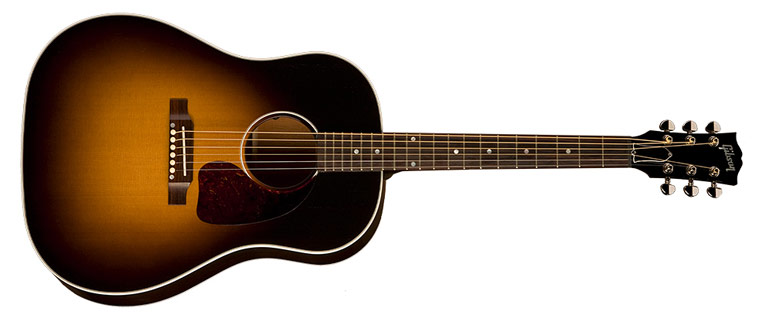

Guitar lessons
Check prices at info@musicalenriqueymiguel.nt

the best music academy
Do not miss a Note
Check prices at info@musicalenriqueymiguel.nt
Do not miss a Note
become a professional guitarist
Subscribe to our channel